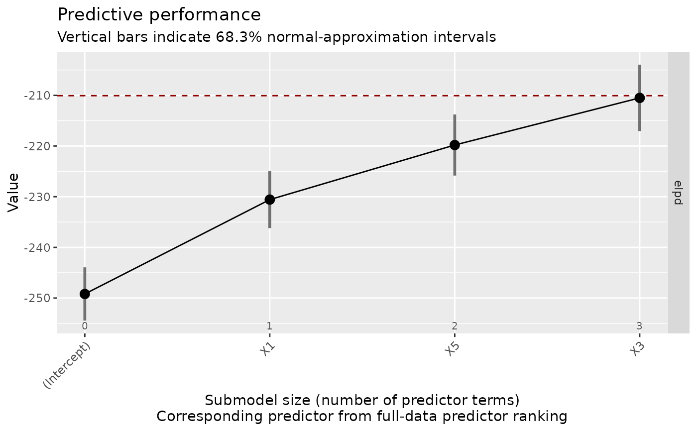

This is the plot() method for vsel objects (returned by varsel() or
cv_varsel()). It visualizes the predictive performance of the reference
model (possibly also that of some other "baseline" model) and that of the
submodels along the full-data predictor ranking. Basic information about the
(CV) variability in the ranking of the predictors is included as well (if
available; inferred from cv_proportions()). For a tabular representation,
see summary.vsel() and performances().
Usage
# S3 method for class 'vsel'
plot(
x,
nterms_max = NULL,
stats = "elpd",
deltas = FALSE,
alpha = 2 * pnorm(-1),
baseline = if (!inherits(x$refmodel, "datafit")) "ref" else "best",
thres_elpd = NA,
resp_oscale = TRUE,
point_size = getOption("projpred.plot_vsel_point_size", 3),
bar_thickness = getOption("projpred.plot_vsel_bar_thickness", 1),
ranking_nterms_max = getOption("projpred.plot_vsel_ranking_nterms_max", NULL),
ranking_abbreviate = getOption("projpred.plot_vsel_ranking_abbreviate", FALSE),
ranking_abbreviate_args = getOption("projpred.plot_vsel_ranking_abbreviate_args",
list()),
ranking_repel = getOption("projpred.plot_vsel_ranking_repel", NULL),
ranking_repel_args = getOption("projpred.plot_vsel_ranking_repel_args", list()),
ranking_colored = getOption("projpred.plot_vsel_ranking_colored", FALSE),
show_cv_proportions = getOption("projpred.plot_vsel_show_cv_proportions", FALSE),
cumulate = FALSE,
text_angle = getOption("projpred.plot_vsel_text_angle", 45),
size_position = getOption("projpred.plot_vsel_size_position", "primary_x_top"),
...
)Arguments
- x
An object of class
vsel(returned byvarsel()orcv_varsel()).- nterms_max
Maximum submodel size (number of predictor terms) for which the performance statistics are calculated. Using
NULLis effectively the same aslength(ranking(object)$fulldata). Note thatnterms_maxdoes not count the intercept, so usenterms_max = 0for the intercept-only model. Forplot.vsel(),nterms_maxmust be at least1.- stats
One or more character strings determining which performance statistics (i.e., utilities or losses) to estimate based on the observations in the evaluation (or "test") set (in case of cross-validation, these are all observations because they are partitioned into multiple test sets; in case of
varsel()withd_test = NULL, these are again all observations because the test set is the same as the training set). Available statistics are:"elpd": expected log (pointwise) predictive density (for a new dataset) (ELPD). Estimated by the sum of the observation-specific log predictive density values (with each of these predictive density values being a—possibly weighted—average across the parameter draws). For the corresponding uncertainty interval, a normal approximation is used."mlpd": mean log predictive density (MLPD), that is, the ELPD divided by the number of observations. For the corresponding uncertainty interval, a normal approximation is used."gmpd": geometric mean predictive density (GMPD), that is,exp()of the MLPD. The GMPD is especially helpful for discrete response families (because there, the GMPD is bounded by zero and one). For the corresponding standard error, the delta method is used. The corresponding uncertainty interval type is "exponentiated normal approximation" because the uncertainty interval bounds are the exponentiated uncertainty interval bounds of the MLPD."mse": mean squared error (only available in the situations mentioned in section "Details" below). For the corresponding uncertainty interval, a log-normal approximation is used ifdeltasisFALSEand a normal approximation is used ifdeltasisTRUE(or"mixed", in case ofplot.vsel())."rmse": root mean squared error (only available in the situations mentioned in section "Details" below). For the corresponding standard error, the delta method is used. For the corresponding uncertainty interval, a log-normal approximation is used ifdeltasisFALSEand a normal approximation is used ifdeltasisTRUE(or"mixed", in case ofplot.vsel())."R2": R-squared, i.e., coefficient of determination (only available in the situations mentioned in section "Details" below). For the corresponding standard error, the delta method is used. For the corresponding uncertainty interval, a normal approximation is used."acc"(or its alias,"pctcorr"): classification accuracy (only available in the situations mentioned in section "Details" below). By "classification accuracy", we mean the proportion of correctly classified observations. For this, the response category ("class") with highest probability (the probabilities are model-based) is taken as the prediction ("classification") for an observation. For the corresponding uncertainty interval, a normal approximation is used."auc": area under the ROC curve (only available in the situations mentioned in section "Details" below). For the corresponding standard error and lower and upper uncertainty interval bounds, bootstrapping is used. Not supported in case of subsampled LOO-CV (see argumentnlooofcv_varsel()).
- deltas
May be set to
FALSE,TRUE, or"mixed". IfFALSE, the submodel performance statistics are plotted on their actual scale and the uncertainty bars match this scale. IfTRUE, the submodel statistics are plotted relatively to the baseline model (see argumentbaseline) and the uncertainty bars match this scale. For the GMPD, the term "relatively" refers to the ratio vs. the baseline model (i.e., the submodel statistic divided by the baseline model statistic). For all otherstats, "relatively" refers to the difference from the baseline model (i.e., the submodel statistic minus the baseline model statistic). If set to"mixed", thedeltas = FALSEpoint estimates are combined with the uncertainty bars from thedeltas = TRUEplot.- alpha
A number determining the (nominal) coverage
1 - alphaof the uncertainty intervals. For example, in case of a normal-approximation uncertainty interval,alpha = 2 * pnorm(-1)corresponds to a uncertainty interval stretching by one standard error on either side of the point estimate.- baseline
For
summary.vsel(): Only relevant ifdeltasisTRUE. Forplot.vsel(): Always relevant. Either"ref"or"best", indicating whether the baseline is the reference model or the best submodel found (in terms ofstats[1]), respectively. In case of subsampled LOO-CV,baseline = "best"is not supported.- thres_elpd
Only relevant if
any(stats %in% c("elpd", "mlpd", "gmpd")). The threshold for the ELPD difference (taking the submodel's ELPD minus the baseline model's ELPD) above which the submodel's ELPD is considered to be close enough to the baseline model's ELPD. An equivalent rule is applied in case of the MLPD and the GMPD. Seesuggest_size()for a formalization. SupplyingNAdeactivates this.- resp_oscale
Only relevant for the latent projection. A single logical value indicating whether to calculate the performance statistics on the original response scale (
TRUE) or on latent scale (FALSE).- point_size
Passed to argument
sizeofggplot2::geom_point()and controls the size of the points.- bar_thickness
Passed to argument
linewidthofggplot2::geom_linerange()and controls the thickness of the uncertainty bars.- ranking_nterms_max
Maximum submodel size (number of predictor terms) for which the predictor names and the corresponding ranking proportions are added on the x-axis. Using
NULLis effectively the same as usingnterms_max. UsingNAcauses the predictor names and the corresponding ranking proportions to be omitted, which requiressize_position = "primary_x_bottom". Note thatranking_nterms_maxdoes not count the intercept, soranking_nterms_max = 1corresponds to the submodel consisting of the first (non-intercept) predictor term.- ranking_abbreviate
A single logical value indicating whether the predictor names in the full-data predictor ranking should be abbreviated by
abbreviate()(TRUE) or not (FALSE). See also argumentranking_abbreviate_argsand section "Value".- ranking_abbreviate_args
A
listof arguments (except fornames.arg) to be passed toabbreviate()in case ofranking_abbreviate = TRUE.- ranking_repel
Either
NULL,"text", or"label". ByNULL, the full-data predictor ranking and the corresponding ranking proportions are placed below the x-axis. By"text"or"label", they are placed within the plotting area, usingggrepel::geom_text_repel()orggrepel::geom_label_repel(), respectively. See also argumentranking_repel_args.- ranking_repel_args
A
listof arguments (except formapping) to be passed toggrepel::geom_text_repel()orggrepel::geom_label_repel()in case ofranking_repel = "text"orranking_repel = "label", respectively.- ranking_colored
A single logical value indicating whether the points and the uncertainty bars should be gradient-colored according to the CV ranking proportions (
TRUE, currently only works ifshow_cv_proportionsisTRUEas well) or not (FALSE). The CV ranking proportions may be cumulated (see argumentcumulate). Note that the point and the uncertainty bar at submodel size 0 (i.e., at the intercept-only model) are always colored in gray because the intercept is forced to be selected before any predictors are selected (in other words, the reason is that for submodel size 0, the question of variability across CV folds is not appropriate in the first place).- show_cv_proportions
A single logical value indicating whether the CV ranking proportions (see
cv_proportions()) should be displayed (TRUE) or not (FALSE).- cumulate
Passed to argument
cumulateofcv_proportions(). Affects the ranking proportions given on the x-axis (below the full-data predictor ranking).- text_angle
Passed to argument
angleofggplot2::element_text()for the x-axis tick labels. Note that the default of argumentangleinggplot2::element_text()isNULL(which implies no rotation) whereas we use a default oftext_angle = 45here. Iftext_angle > 0(< 0), the x-axis text is automatically right-aligned (left-aligned). If-90 < text_angle && text_angle < 90 && text_angle != 0, the x-axis text is also top-aligned. When controllingtext_anglevia global optionprojpred.plot_vsel_text_angle, keep in mind that a global option set toNULLis treated like an unset global option, sooptions(projpred.plot_vsel_text_angle = NULL)would result intext_angle = 45, nottext_angle = 0.- size_position
A single character string specifying the position of the submodel sizes. Either
"primary_x_bottom"for including them in the x-axis tick labels,"primary_x_top"for putting them above the x-axis (the current default), or"secondary_x"for putting them into a secondary x-axis. Currently,"primary_x_top"and"secondary_x"may not be combined withranking_nterms_max = NA(i.e., only"primary_x_bottom"works withranking_nterms_max = NA).- ...
Arguments passed to the internal function which is used for bootstrapping (if applicable; see argument
stats). Currently, relevant arguments areB(the number of bootstrap samples, defaulting to2000) andseed(seeset.seed(), but defaulting toNAso thatset.seed()is not called within that function at all).
Value
A ggplot2 plotting object (of class gg and ggplot). If
ranking_abbreviate is TRUE, the output of abbreviate() is stored in
an attribute called projpred_ranking_abbreviated (to allow the
abbreviations to be easily mapped back to the original predictor names).
Details
The stats options "mse", "rmse", and "R2" are only available
for:
the traditional projection,
the latent projection with
resp_oscale = FALSE,the latent projection with
resp_oscale = TRUEin combination with<refmodel>$family$catsbeingNULL.
The stats option "acc" (= "pctcorr") is only available for:
the
binomial()family in case of the traditional projection,all families in case of the augmented-data projection,
the
binomial()family (on the original response scale) in case of the latent projection withresp_oscale = TRUEin combination with<refmodel>$family$catsbeingNULL,all families (on the original response scale) in case of the latent projection with
resp_oscale = TRUEin combination with<refmodel>$family$catsbeing notNULL.
The stats option "auc" is only available for:
the
binomial()family in case of the traditional projection,the
binomial()family (on the original response scale) in case of the latent projection withresp_oscale = TRUEin combination with<refmodel>$family$catsbeingNULL.
Note that the stats option "auc" is not supported in case of subsampled
LOO-CV (see argument nloo of cv_varsel()).
Horizontal lines
As long as the reference model's performance is computable, it is always
shown in the plot as a dashed red horizontal line. If baseline = "best",
the baseline model's performance is shown as a dotted black horizontal line.
If !is.na(thres_elpd) and any(stats %in% c("elpd", "mlpd", "gmpd")), the
value supplied to thres_elpd (which is automatically adapted internally in
case of the MLPD or the GMPD or deltas = FALSE or deltas = "mixed") is
shown as a dot-dashed gray horizontal line for the reference model and, if
baseline = "best", as a long-dashed green horizontal line for the baseline
model.
Examples
# Data:
dat_gauss <- data.frame(y = df_gaussian$y, df_gaussian$x)
# The `stanreg` fit which will be used as the reference model (with small
# values for `chains` and `iter`, but only for technical reasons in this
# example; this is not recommended in general):
fit <- rstanarm::stan_glm(
y ~ X1 + X2 + X3 + X4 + X5, family = gaussian(), data = dat_gauss,
QR = TRUE, chains = 2, iter = 500, refresh = 0, seed = 9876
)
# Run varsel() (here without cross-validation, with L1 search, and with small
# values for `nterms_max` and `nclusters_pred`, but only for the sake of
# speed in this example; this is not recommended in general):
vs <- varsel(fit, method = "L1", nterms_max = 3, nclusters_pred = 10,
seed = 5555)
print(plot(vs))
